Section2.2Extending the Number System: Complex Numbers
Throughout history, our number system has evolved primarily driven by necessity. It should come as no surprise that our current system (the complex numbers) was also driven by an issue with the real number system. One of the motivators was the search for real solutions to equations, in particular, polynomial equations. The solution to the general quadratic equation, \(ax^2+bx+c=0\text{,}\) had beeen established as
but there was still some concern for the situation when a negative appeared under the radical. Putting these negative square roots aside, the usefulness of the real solutions found with the quadratic formula was considered a leap forward.
In 1494, Luca Picioli published his volume, Summa de Arithmetica, where he examined linear and quadratic equations. However, there was still a search for a solution to the general cubic, \(ax^3+bx^2+cx+d=0\text{.}\) At the time, the solution to some forms of the cubic had been found. For example, Scipione del Ferro had found a way to solve the "depressed" cubic (meaning one without the squared term) of the form, \(x^3+mx=n\text{,}\) but the general cubic was still out of reach and Picioli did not have high hopes that a solution to the general cubic could be found. In his work, Picioli began to experiment with more symbolic notation using the symbol, co, to denote a variable (here co was short for cosa, Italian for "thing" or "thing to be found"), and was a leap forward in compressing notation so that ideas could be expressed in a smaller visual space reducing the number of words used in formalizing mathematical arguments. We will address the importance of compressed expressions with respect to Kaput, Blanton, and Moreno’s (2008) model for the development of symbolic meaning later, but for now, it suffices to say, mathematics was on the verge of significant advancement.
Scipione del Ferro had kept his discovery for finding a solution to \(x^3+mx=n\) a secret as was often the practice of the time, since academic appointments were not very secure and mathematicians could be "dethroned" from their positions by being challenged. Upon his death, he passed his solution to his student, Antonio Fior. Now Fior was not nearly as good of a mathematician as del Ferro, but was a bit more brash. Fior began challenging mathematicians since he knew all he had to do was give them depressed cubics that only he alone knew how to solve and he would be the victor. As fate would have it, Fior chose to challenge the Brescian scholar, Niccolo Fontana. Now Fontana was a brilliant mathematician, but was disfigured by the sword of a French soldier as a child and his deformity caused him to speak with a stammer. He was therefore more commonly known by the cruel epithet, Tartaglia (The Stammerer). Well, Tartaglia began to attack Fior’s challenge of 30 depressed cubics, but had not made much progress. As the time to submit his final solutions approached, on February 13, 1535, he had a breakthrough and discovered the solution to the depressed cubic, \(x^3+mx=n\text{,}\) defeating his challenger.
Now that Tartaglia had mastered the depressed cubic, another brilliant mathematician, Gerolamo Cardano, sought an audience with Tartaglia in hopes of learning the solution to the depressed cubic. Tartaglia refused to reveal his secret, but after many other attempts at persuasion, Tartaglia finally relented with the caveat that Cardano would not reveal or publish the solution. Cardano gladly accepted the terms.
Enter the young 20-year-old mathematician, Ludovico Ferrari. Ferrari approached Cardano asking for work and they soon forged a partnership. With their collaboration, Cardano found a way to depress the general cubic, \(ax^3+bx^2+cx+d=0\text{,}\) into one of the form, \(x^3+mx=n\text{.}\) However, Cardano’s dilemma was that in order to publish his solution to the general cubic, he would then need to use Tartaglia’s solution for the depressed cubic and he had vowed not to reveal it.
Stymied by his moral dilemma, in 1543, Cardano and Ferrari went to Bologna to explore the works of del Ferro. To their surprise, they found that del Ferro had actually written down his original solution to the depressed cubic, prior to Tartaglia discovering it. Since he could now state that he got the solution to the depressed cubic from del Ferro and not Tartaglia, Cardano was now free to publish the solution to the general cubic. When his work, Ars Magna was published, it was earth shattering news to the mathematical community.
So now you are wondering, how is this historical trip relevant to complex numbers? As it turns out, using Cardano’s process for finding solutions to the general cubic, at stages of the process, the pesky number, \(\sqrt{-1}\text{,}\) shows up. However, when continuing the process, we can have the \(\sqrt{-1}\) resolved by squaring and thus obtain real solutions in the end. So in order to obtain real solutions to the general cubic, mathematicians had to "tip-toe" through the imaginary, \(i=\sqrt{-1}\text{,}\) and this was uncomfortable. With the quadratic formula, we could just ignore the messy \(\sqrt{-1}\) since those solutions weren’t real anyway, but here, we have to put up with \(\sqrt{-1}\) to arrive at real solutions. Mathematicians could no longer simply turn a blind eye, but had to face that such numbers must exist.
Subsection2.2.1Complex Numbers and the Common Core State Standards
The secondary school curriculum includes the teaching of complex numbers even though some aspects of this are not required for all students graduating from high school. Note that the Common Core State Standards denote this with a (+) symbol next to those topics not expected for all students. However, all secondary teachers must be expected to teach these concepts and certainly any student planning to enter scientific fields should be expected to leave high school having exerpience with complex numbers. Below in Figure 2.2.1 are the standards from the CCSS with regard to complex numbers.
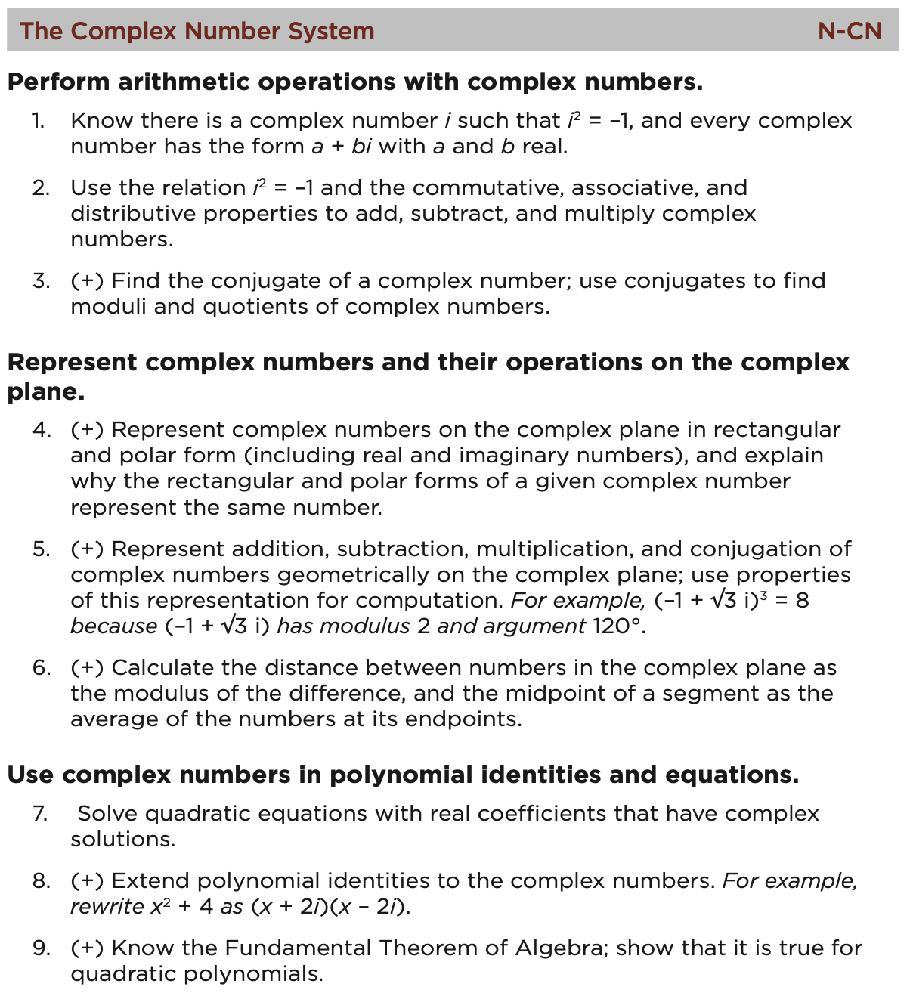
Figure2.2.1.Complex Numbers Standard from CCSS
“When will I ever teach this?” You most likely have uttered this statement while taking undergraduate mathematics courses as part of your teacher preparation program. The purpose of this section is to highlight examples of where the secondary mathematics curriculum and the undergraduate mathematics curriculum are inextricably connected. To begin this discussion, we may want to brush up on some mathematical ideas on which a teacher tasked with teaching complex numbers may rely. The Core-Plus curriculum is counting on connections and is designed to take advantage of a variety of mathematical concepts as the complex number system is explored.
Subsection2.2.2Preliminary Connections to Complex Numbers
Activity2.2.1.
To start, examine the On Your Own problem at the end of Investigation 1, from the fourth year text of Contemporary Mathematics in Context: A Unified Approach found on page 385 of book 4B. It is restated below for your convenience in Figure 2.2.2.
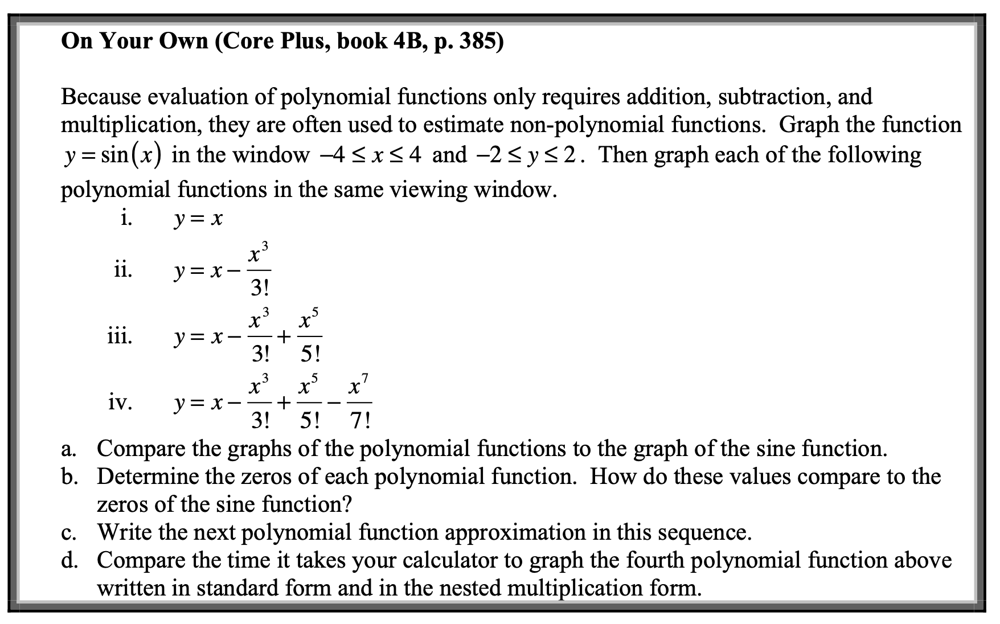
Figure2.2.2.Core Plus On Your Own Item, Book 4B, p. 385
In addition, there is a companion question at the end of Lesson 2 on Polynomials and Factoring found on page 402 (see Figure 2.2.3 ). This question states:
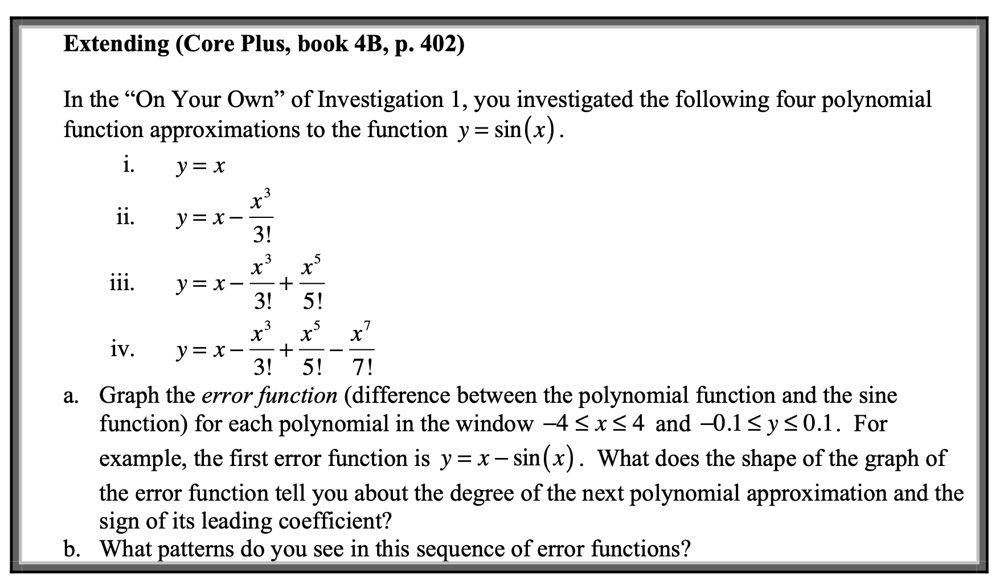
Figure2.2.3.Core Plus On Your Own Item, Book 4B, p. 402
Give responses to the following questions before discussing them within your group. After you have provided individual responses to the questions, spend approximately 15 minutes discussing your answers within your group and record any changes or modifications to your original responses on your whiteboards along with brief elaborations on why you may or may not have modified your responses.
(a)
What do you consider to be the relevant mathematical concepts involved in the exploration?
(b)
Describe how you think content from each of the undergraduate courses (Calculus, Linear Algebra, and Discrete Mathematics) might be relevant to this investigation.
Activity2.2.2.Jan’s Class and Jeff’s Question.
Now that you have started to reflect on the mathematics and pedagogy present in these explorations, consider the following classroom situation where a teacher (Jan) is questioned by her students.
Jan has been teaching polynomials and factoring out of Lesson 2 of the Contemporary Mathematics in Context: A Unified Approach (Core-Plus) curriculum. She assigned students to work on the “On Your Own” question found on page 385 of book 4B as well as the “Extending” questions found on pages 402-403 (see Figure 2.2.2 and Figure 2.2.3). During the next class period, she facilitated a discussion of the homework assignment. Within the discussion, Jeff asked, “I was able to do the error function graphs and I understand that the longer the polynomial, the closer we get to matching the sine function, but how did they come up with those polynomial functions? They all have weird coefficients and stuff.”
(a)
Explain how you would respond to Jeff’s question. Keep in mind that Jeff is in his fourth year of high school mathematics and has been exposed to the concept of derivative earlier in book 4A.
(b)
When we describe the shape and behavior of various functions, we often pay attention to features such as zeros, y-intercepts, slope, intervals of increasing/decreasing, concavity, etc. Of these features, which do you consider to be the most relevant to Jeff’s question?
(c)
Describe what type of investigation you might give your students to help them discover the strategy for constructing appropriate polynomials that imitate the sine function. Be very specific and include actual questions you would give the students for investigation.
Depdending on when you are taking this course, you may or may not have completed Calculus 2. In order to have productive conversations about this classroom scenario, we should take a moment to either examine or brush up on some content from Calculus 2. In this next activity, we will revisit some of these main concepts, so if you have already been exposed to an activity such as this, please don’t spoil it for others and humor me by playing along and not squash the potential discoveries of your peers.
Activity2.2.3.Impersonating Functions.
This activity explores basic concepts of algebra and calculus involved in using power series to imitate transcendental functions. In particular, the series for \(\sin\left(x\right)\text{,}\)\(\cos\left(x\right)\text{,}\) and \(e^x\) are investigated and connections are made with practical uses of such functions for creating computing algorithms used by calculators and computers to evaluate numerical approximations.
Have you ever wondered how your calculator knows what the \(\ln\left(5\right)\) or the \(\sin\left(0.7\right)\) is or how it can find decimals for numbers like \(\sqrt{3}\text{?}\) Did someone program every possible square root, trig value, or logarithm into the machine? Wouldn’t that take up a tremendous amount of memory? Well, the answer is that your calculator knows how to use basic operations like addition, subtraction, multiplication, and division to approximate these types of values to the desired decimal accuracy. In this exploration you will first investigate how we can approximate more complicated transcendental functions using simple polynomials. Once we establish this method for approximating functions with polynomials, we will then use it to explore a surprising connection between trigonometry and the complex number systems.
To this point we have seen that if we zoom in far enough, a function looks a great deal like a straight line. But how does this help us impersonate more complicated functions like \(e^x\text{?}\)
(a)
Graph \(y=e^x\) along with several possible linear functions that would look like the “linear-looking” graph of \(y=e^x\) when you zoom in near \(x=0\text{.}\) Remember, you need the linear function to have the same slope as \(y=e^x\) and also have the same point in common with \(y=e^x\) at zero. Record the lines you tried along with brief explanations for why you tried those particular lines. Give your final line that you feel best imitates \(y=e^x\) at \(x=0\text{.}\)
(b)
Now that you have created a line that looks similar to \(y=e^x\) near \(x=0\text{,}\) graph it along with \(y=e^x\) on the same window. Zoom out and give an approximation of the interval about \(x=0\) where your line is a “fairly close” imitation of \(y=e^x\text{.}\)
(c)
Suppose you want to imitate \(y=e^x\) within a larger interval. Since \(y=e^x\) is not linear, we need a function that curves so that it will “hug” the graph of \(y=e^x\) through a larger interval. Since quadratics are curved, experiment with your linear function from part (a) by adding on a term of the form \(ax^2\text{.}\) Record your choices for \(a\) along with sketches of your new quadratic function and \(y=e^x\) on the same axes. Give your final choice of quadratic function of the form \(ax^2+bx+c\) that best imitates \(y=e^x\) near \(x=0\text{.}\)
(d)
You have now been able to extend the size of the interval where \(y=e^x\) can be imitated by a polynomial by adding on a higher degree polynomial term. Can this continue? Take the quadratic function you have developed in part (c) and try to extend the interval of imitation further by adding on a third-degree term and experimenting with its coefficient. Give your final choice of cubic function of the form \(ax^3+bx^2+cx+d\) that best imitates \(y=e^x\) near \(x=0\) and sketch your graph of \(y=e^x\) along with your cubic.
(e)
The polynomials you have created to imitate the function \(y=e^x\) are called Taylor polynomials named for the mathematician, Brook Taylor. To understand why these particular coefficients work for imitating this function (as Jeff in vignette was asking), let’s look at one other function (\(f\left(x\right)=\sin\left(x\right)\)) and imitate it using a built-in command on your CAS. On most CAS, the \(\mathbf{Taylor}\) command has similar syntax. On Maple, we use \(\mathbf{taylorpoly(sin(x), x=0, 7)}\text{;}\) to get a seventh degree polynomial that mimics \(f\left(x\right)=\sin\left(x\right)\) near zero. On a TI-Nspire CX CAS, the syntax is \(\mathbf{taylor(sin(x), x, 7, 0)}\) where the 0 at the end is the point near where you want to imitate the function and the \(x\) is the variable you would like used in the polynomial (if you omit the value about which you want to imitate the function, it assumes a value of 0). On the TI-Nspire CX CAS you can find the \(\mathbf{Taylor}\) command under the \(\mathbf{Series}\) submenu of the \(\mathbf{Calculus}\) menu.
Use your CAS’s Taylor command to generate 1st, 3rd, 5th, 7th, and 9th degree Taylor polynomials for \(f\left(x\right)=\sin\left(x\right)\) and record them in a table like the one in Figure 2.2.4. Graph all of these along with \(y=\sin\left(x\right)\) on the same axes.
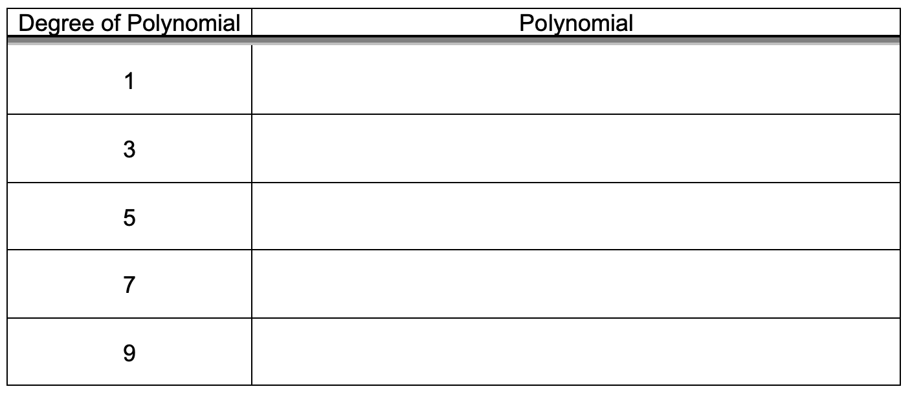
Figure2.2.4.Odd Degree Polynomials for \(f\left(x\right)=\sin\left(x\right)\)
(f)
Now in order to understand why these particular polynomials work, let’s examine the 9th degree polynomial that you have found. As you learned in Calculus 1, we can infer information about the “shape” of a graph by looking at the derivative. More specific, the first derivative tells us the slope of the function at a given point, the second derivative tells us the rate at which the slope is changing, the third derivative tells us the rate at which the rate of the slope is changing and so on. With each higher order derivative, we gain more information about the “shape” of the graph and its behavior. This is the idea behind Taylor polynomials.
To explore this relationship, complete the following table where you evaluate the \(n^{th}\) derivatives of both your polynomial and \(f\left(x\right)=\sin\left(x\right)\) at \(x=0\text{.}\) Record them in a table like the one in Figure 2.2.5 and state your observations related to your results.
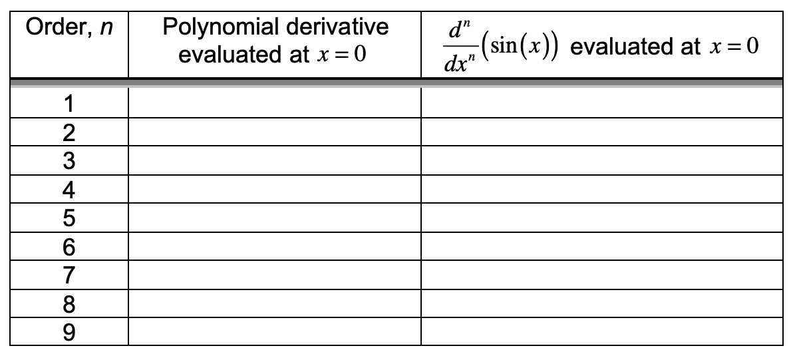
Figure2.2.5.Odd Degree Polynomials for \(f\left(x\right)=\sin\left(x\right)\)
(g)
Now find the 8th degree Taylor polynomial for \(f\left(x\right)=\cos\left(x\right)\) using your CAS’s Taylor command. Repeat what you did in part (f). Record your results in a table like the one in Figure 2.2.6 and state your observations related to your results.
Figure2.2.6.Odd Degree Polynomials for \(f\left(x\right)=\sin\left(x\right)\)
(h)
Using your observations from parts (f) and (g), state a conjecture about the \(n^{th}\) derivative of a Taylor polynomial and the \(n^{th}\) derivative of the function it is imitating. Then test your conjecture with the 3rd degree Taylor polynomial for \(e^x\) you found earlier.
(i)
In the special case of \(e^x\) near zero, use your Taylor command to generate polynomials of degree 5, 6, 7, and 8 for \(f\left(x\right)=e^x\text{.}\) Describe the pattern you see for the general \(n^{th}\) degree Taylor polynomial for \(f\left(x\right)=e^x\text{.}\)
(j)
Recall from Calculus 1, \(\frac{d^n}{dx^n}\left(e^x\right)=e^x\) for \(n \in \mathbb{Z}^{+}\text{.}\) Explain how this fact is related to your results from the \(n^{th}\) derivative of your general Taylor polynomial for \(e^x\text{.}\)
(k)
The fact that we can create polynomials to imitate the functions \(e^x\text{,}\)\(\sin\left(x\right)\text{,}\) and \(\cos\left(x\right)\) is extremely important from a practical sense. Have you ever wondered how your calculator knows the value of something like \(\sin\left(0.7\right)\text{?}\) The operations of addition, subtraction, multiplication, and division are basic algorithms that exist as routines in any computer or calculator (note that exponents can be accomplished using repeated multiplication). If we wish to know \(\sin\left(0.7\right)\text{,}\) the machine can simply create a finite polynomial that imitates the sine function to the desired decimal accuracy and then compute it using these basic binary operations that make up the polynomial.
Now suppose you have only a non-scientific calculator (without sine, cosine, and tangent keys) and need to evaluate \(\sin\left(1.78\right)\) where the argument for sine is in radians. Explain how you could accomplish it? What about \(\cos\left(1.78\right)\text{?}\) What about \(\tan\left(1.78\right)\text{?}\)
Many who begin a teacher preparation program often have a misconception that since they have experienced mathematical content as a learner, teaching it simply consists of telling students what you have already learned yourself. As I was preparing to be a teacher, this was also my naïve position. When I first started to prepare lessons and act them out with my peers, I soon realized that I had not really internalized the mathematics deeply enough to respond to interesting questions posed by my fellow pre-service teachers. But I would just dismiss it at first by justifying it as, "these are my peers, so that’s not such a big deal. I am going to teach high school students, not my peers who were already in undergraduate courses with me". However, observing both in field placements and videos of actual classrooms, I saw high school students asking really interesting questions for which I had no reasonable response. In my field placements, typically the teacher would skirt the issue and tell the student to just follow the steps they had been shown leaving the students frustrated.
As time went on, I began to realize that the reason the teacher avoided these questions was because, like me, they did not fully grasp the mathematics that they were teaching. This expereince motivated me to try to do more than memorize the procedures I was being taught, but rather to connect ideas. This actually helped me to reduce what I needed to commit to memory since I could retrieve information better once it was connected to other concepts. For this reason, we should now reflect on our mathematical experience and connect it to your earlier responses to Jeff’s question in the classroom scenario.
Activity2.2.4.Jan’s Class and Jeff’s Question-Revisited.
Now that we have explored the concepts in Impersonating Functions (Activity 2.2.3), we should revisit the classroom situation from Jan’s class Activity 2.2.2. This time, try to view the classroom exchange through the lens of undergraduate mathematics. In particular, try to relate your experiences from Impersonating Functions to how you would respond as a teacher to Jeff’s question.
(a)
In light of your experience in our activity, Impersonating Functions, describe the central mathematical concepts involved in addressing Jeff’s question.
(b)
Describe how your facilitation of the rest of the classroom discussion would change from how you responded earlier in Activity 2.2.2 based on your experiences in Impersonating Functions. Give specific examples to illustrate what you would do in guiding the students and how these pedagogical choices have changed from your earlier responses.
Subsection2.2.3Complex Connections: Applications to the Classroom
One of the important skills as a teacher is the ability to take specific curriculum and modify or add to it to make connections for your students. In this section, we will spend some time examining the structure of a specific set of curriculum materials and reflect on how you might make classroom decisions to take advantage of connected mathematics content in light of your own understanding of the mathematics you learned as an undergraduate. In this case we will use the secondary curriculum Contemporary Mathematics in Context: A Unified Approach (Core-Plus) as a springboard for discussion.
Recall the classroom situation presented in Subsection 2.2.2. There, Jan had been teaching polynomials and factoring out of Lesson 2 of the Contemporary Mathematics in Context: A Unified Approach (Core-Plus) curriculum and she assigned homework related to the use of polynomials for imitating functions such as \(f\left(x\right)=\sin\left(x\right)\text{.}\) Your task here is to explore Lesson 2 from Unit 6, Polynomials and Factoring, as well as Lesson 4 from Unit 7, and explain how making appropriate pedagogical decisions could help connect the topics involved.
Activity2.2.5.
Read through the Lesson 2 from Unit 6 of the Contemporary Mathematics in Context: A Unified Approach (Core-Plus) curriculum, book 4B (pp. 382-405). You will notice that the lesson is broken up into three investigations (Need for Speed, Strategic Factors, and A Complex Solution).
(a)
The overall purpose of the lesson seems to center around the idea of using polynomials in various forms to model situations and even imitate more complicated functions such as \(f\left(x\right)=\sin\left(x\right)\text{.}\) Discuss in your groups why you think the investigation, A Complex Solution, was included in this lesson.
(b)
As you will recall from the discussion in Activity 2.2.2, Jeff had asked a question regarding the origin of the polynomials that were being used to imitate the function \(f\left(x\right)=\sin\left(x\right)\text{.}\) Also note that this occurred within Lesson 2 of Unit 6. In addition, this particular lesson also sees the first time complex numbers are introduced within the Core Plus curriculum. Now that you have examined the entire lesson from this unit, explain any connections that you see between complex numbers and the use of polynomials to imitate the sine function.
Many teachers (and the general population for that matter) often think that the text book they use "is" the curriculum. It is important to realize that this is not the case. For example, we have already explored the Common Core State Standards which is the document for many states (like Michigan) that define the curriculum. Local school districts can expand on these standards as well giving teachers more detail for what is to be covered. However, the text itself, is not the curriculum, but rather a tool for delivering the curriculum much like other tools such as graphing calculators or computer software are tools. One of the tasks of a teacher is to take a curriculum that is being used and help their students connect ideas even if the curriculum does not explicitly do it.
Activity2.2.6.
Read through Lesson 4 from Unit 7 of the Contemporary Mathematics in Context: A Unified Approach (Core-Plus) curriculum, book 4B (pp. 494-507). In this lesson, the concepts surrounding complex numbers are expanded from their earlier introduction in Lesson 2 of Unit 6. In particular, the trigonometric form of complex numbers, \(r\left(\cos\theta +i\sin\theta\right)\text{,}\) is discussed. In question 3 of the “Reflecting” section (p. 504), Euler’s formula, \(e^{i\theta}=\cos\theta +i\sin\theta\text{,}\) is stated and the students are expected to evaluate expressions using it; however, there is no treatment of the origin of Euler’s formula. As a teacher, your job is to help students make connections between their earlier experiences in Unit 6 and their current experiences in Unit 7.
In addition, consider the following dialogue from Jan’s earlier classroom situation where she is has taught (Lesson 2, Unit 6) is now teaching the content from Lesson 4 of Unit 7. She had assigned the questions from the “Reflecting” section of Lesson 4 (pp. 504-505) as homework. During the next class session, the following discussion occurred.
Jan: How did the homework go? Does anyone have questions?
Dan: When I got to question 3, I wasn’t sure where that \(e\) to the \(i\) theta thing came from?
Jan: Oh, that’s just Euler’s formula. The mathematician Euler came up with that a long time ago.
Dan: But I don’t get where he got it.
Liz: I had the same sort of question. Isn’t \(e\) a real number?
Jan: Yes, it is.
Liz: Then how can you raise a real number to a power and get a number that’s not real? That doesn’t make sense. Didn’t we say that if you multiply any two real numbers together, we get another real number? Like isn’t \(e^2\) real?
Jan: Yes, \(e^2\) is real.
Liz: But if powers are just repeated multiplication, then why wouldn’t \(e\) to any power be real?
Dan: Yeah, I couldn’t figure that out either.
Jan: But the power in \(e^{i\theta}\) is not real. So it can end up having an imaginary part.
Ken: But where did Euler get this thing? How did he figure out that \(e^{i\theta}=\cos\theta +i\sin\theta\text{?}\)
Jan: Well you’ll just have to take my word for it right now. Euler used mathematics that you can’t understand yet. You’ll need to wait until you take more math before you can start to understand that.
With these situations in mind, in your groups, discuss and respond to the following questions.
(a)
Describe any connections you see between the content of Lesson 2 of Unit 6 and Lesson 4 of Unit 7.
(b)
Discuss your reaction to Jan’s response to her students. In particular, how would you have handled the situation? Keep in mind that just as in Activity 2.2.2, these students are in their fourth year of high school mathematics and have been exposed to the concept of derivative earlier in book 4A.
Subsection2.2.4A Complex Situation
Now that we have established how Taylor series can be used to impersonate other more complicated functions, we can look at connections to complex numbers and try to address Ken’s question from Jan’s classroom exchange. The authors of the Core-Plus curriculum are counting on these connections and their materials reflect this thoughtful design. One of the goals of integrated curricula like Core-Plus or IMP is to impart to the students that mathematics is not simply a collection of procedures to be memorized and performed, but rather a linked web of ideas and concepts that make sense when we look at them from a holistic perspective. To this end, we now examine how ideas from calculus, algebra, and geometry come together to give a more solid picture of complex numbers.
At the end of the classroom exchange from Jan’s lesson, Ken asked the very understandable question, "But where did Euler get this thing? How did he figure out that \(e^{i\theta}=\cos\theta +i\sin\theta\text{?}\)". However, Jan’s response of, "Well you’ll just have to take my word for it right now. Euler used mathematics that you can’t understand yet." may not be entirely accurate. In this activity we explore how the use of Taylor polynomials can help Ken explore a surprising connection between trigonometry and the complex number systems. During the next activity, we will want to use the interactive sketch found in Figure 2.2.7 below.
Figure2.2.7.Complex Plane with \(z_1\text{,}\)\(z_2\text{,}\) and \(z_3=z_1 \cdot z_2\)
(a)
Recall from Activity 2.2.3, we noticed that we can mimick the three transcendental functions, \(e^x\text{,}\)\(\sin\left(x\right)\text{,}\) and \(\cos\left(x\right)\) by using the polynomials:
At this point, you may have noticed similarities among the three polynomial expansions that imitate the three transcendental functions: \(e^x\text{,}\)\(\sin\left(x\right)\text{,}\) and \(\cos\left(x\right)\text{.}\) Describe any connections you see among the terms for these polynomial expansions.
(b)
Using the first six terms for each of the polynomial expansions of \(\cos\left(\theta\right)\) and \(\sin\left(\theta\right)\text{,}\) write out an expression for the approximation to \(\cos\left(\theta\right)+i\cdot\sin\left(\theta\right)\text{.}\)
(c)
Now using the substitution of \(x=i\cdot\theta\) in the polynomial expansion \(e^x=1+x+\frac{x^2}{2!}+\frac{x^3}{3!}+\frac{x^4}{4!}+\frac{x^5}{5!}+\frac{x^6}{6!}+\cdots\text{,}\) write out the first twelve terms. On the TI-Nspire CAS you can do this by simply using the "such that" key entering \(|x=i\cdot\theta\) after the expression for the Taylor polynomial you found for \(e^x\text{.}\) Describe any patterns you see among the three polynomial expansions for \(e^x\text{,}\)\(\sin\left(x\right)\text{,}\) and \(\cos\left(x\right)\text{.}\) Did this substitution help remedy any differences you noticed in part (a)? Explain.
Notice that the result you found in part (c) is a number that has both a real and an imaginary part. The terms that are similar to the polynomial for sine have the imaginary number \(i\) attached by multiplication.
In this case we think of a complex number of the form \(a+bi\) as a point in the complex plane where the real part is plotted along the horizontal axis and the imaginary part is plotted along the vertical axis. As in the case of the relationship between rectangular and polar coordinates, we can also think of the same point defined by the rectangular form \(a+bi\) as also defined by an angle and a radius. For example, we can take the complex number \(\frac{1}{2}+\frac{\sqrt{3}}{2}i\) and express it as the point in the complex plane located at a distance of 1 from the origin and at an angle of \(\frac{\pi}{3}\) since \(\frac{1}{2}+\frac{\sqrt{3}}{2}i=\cos\left(\frac{\pi}{3}\right)+i\sin\left(\frac{\pi}{3}\right)\text{.}\) Although these are both helpful ways to represent complex numbers, is there another way that is even simpler?
Now considering the fact that we can express any complex number \(a+bi\) in the polar form, \(r\left(\cos\left(\theta\right)+i\cdot\sin\left(\theta\right)\right)\) as you observed in part (c), what is the practical significance of your discovery? We will now investigate the relevance of this observation to basic operations on complex numbers.
(d)
As seen in Figure 2.2.7, the complex numbers, \(z_1\text{,}\)\(z_2\text{,}\) and \(z_3=z_1 \cdot z_2\) are sketched in the complex plane. Note that you can simply edit the real and imaginary components of \(z_1\) and \(z_2\) for each complex numbers on the left or drag them around. You are not able to drag \(z_3\) since it is defined as the product of \(z_1\) and \(z_2\) and thus is dependent on them. The measure of the three angles are given on the left along with the magnitude for each of these complex numbers. Consider the two complex numbers, \(z_1=1+\sqrt{3}i\) and \(z_2=\frac{3\sqrt{3}}{2}+\frac{3}{2}i\) as given in the figure. Explore the relationships among \(z_1\text{,}\)\(z_2\text{,}\) and \(z_3\) by manipulating \(z_1\) and \(z_2\text{.}\) Describe any patterns that you notice.
(e)
Now express each of the numbers, \(z_1\text{,}\)\(z_2\text{,}\) and \(z_3\) in polar form, \(r\left(\cos\left(\theta\right)+i\cdot\sin\left(\theta\right)\right)\text{.}\) Do the results of the polar form agree with your observations from your sketch of the numbers plotted in the complex plane part (d)?
(f)
Noting the magnitude and angle of the three complex numbers, move \(z_1\) by dragging it on the complex plane. What do you notice about the change in the angle and magnitude of \(z_3\) as compared with the change you observed with \(z_1\text{?}\) Try the same process with \(z_2\) and note the relationships between the angle and magnitude changes of \(z_3\text{.}\) State your observations in the form of a conjecture.
(g)
Given your result from part (c), provide a simple explanation for the pattern you have just noticed in parts (d), (e), and (f) by expressing each complex number, \(z_1\text{,}\)\(z_2\text{,}\) and \(z_3\) as a single exponential term of the form \(re^{i\theta}\text{.}\)
Subsection2.2.5Pulling Things Together: Basic Geometry
Just as the Greeks were wary of numbers such as \(\sqrt{2}\text{,}\) mathematicians were also cautious when it came to the solutions of equations like \(x^2=-1\text{.}\) It did not seem conceivable to have a number that when multiplied by itself could yield a negative number. In fact, negative numbers themselves were still suspect and even though Euler had shown that the product of two negatives was a positive (see Theorem 2.1.17), mathematicians were not quite ready to deal with the interpretation of a negative number. Nonetheless, as we noted before, when Cardano was able to come up with real solutions to the general cubic equation, \(ax^3+bx^2+cx+d=0\text{,}\) by tiptoeing through solutions to intermediate equations where \(\sqrt{-1}\) existed, interest grew in regard to this weird number, \(\sqrt{-1}\text{.}\)
Although the imaginary number \(i=\sqrt{-1}\) has become accepted and used to extend the real numbers, \(\mathbb{R}\text{,}\) to the complex numbers, \(\mathbb{C}\text{,}\) how do we as mathematicians come to understand this set? Before we delve deeper into the ways in which the complex numbers help us connect various branches of mathematics, let us first have a brief review of how complex numbers can be viewed and the representations associated with their understanding.
Summarizing what we have discussed thus far, you will recall that our numeration system has evolved from the basic counting numbers, \(\mathbb{Z}^+\) to the whole numbers, \(\mathbb{Z}^+ \cup \left\{0\right\}\text{,}\) to the integers, \(\mathbb{Z}\text{,}\) to the rational numbers, \(\mathbb{Q}\text{,}\) and finally the real numbers, \(\mathbb{R}\text{.}\) As we have seen, \(\mathbb{Z}^+ \subset \mathbb{Z}^+ \cup \left\{0\right\} \subset \mathbb{Z} \subset \mathbb{Q} \subset
\mathbb{R} \text{.}\) So how do the complex numbers fit into this scheme? We would like to have an extension of our real numbers so that \(\mathbb{Z}^+ \subset \mathbb{Z}^+ \cup \left\{0\right\} \subset \mathbb{Z} \subset \mathbb{Q} \subset
\mathbb{R} \subset \mathbb{C}\text{.}\) In order to extend the real numbers, if we allow the imaginary numbers to simply augment the real numbers by adding on an imaginary part to a real number such as \(a+bi\) where \(a\) and \(b\) are real numbers, then we can reduce the complex numbers to real numbers by simply using the special case where \(b=0\) to generate the real numbers. Therefore we obtain the following definition.
Definition2.2.8.
The complex numbers are the set of all numbers of the form \(a+bi\) where \(a\) and \(b\) are real numbers and \(i=\sqrt{-1}\text{.}\) Note that if \(b=0\text{,}\) we have the set of real numbers and so \(\mathbb{R} \subset \mathbb{C}\text{.}\)
Now that we have a definition, how do we make sense of these numbers? Until the complex numbers came along, all was fine. We could think of the whole numbers as the cardinality of sets of objects. When negative numbers came on the scene, we could understand them through a process of “taking away” from sets of objects. As we progressed to rational and irrational numbers, we invoked a measurement model (the number line) to describe all of the previous types of numbers. But how then do we interpret complex numbers?
If we take a closer look at the various parts of a complex number, we can gain some insight into how to represent them. Since a complex number, \(a+bi\text{,}\) is made up of “coefficients” \(a\) and \(b\) that are real numbers, why not use the model that has worked for real numbers, the number line? The only problem is that we now have two real numbers associated with a given complex number. So which one do we use? The solution is to use both. Why not think of a complex number as an ordered pair of real numbers. This would imply that we can plot a complex number in a coordinate plane using \(\mathbf{1}\) as the \(\mathbf{real}\)\(\mathbf{unit}\) along one axis and \(\mathbf{i}\) as the \(\mathbf{imaginary}\)\(\mathbf{unit}\) along the other axis since \(a+bi=a\cdot 1+b\cdot i\text{.}\) As a result, we can think of a complex number, \(a+bi\text{,}\) as a point in the plane.
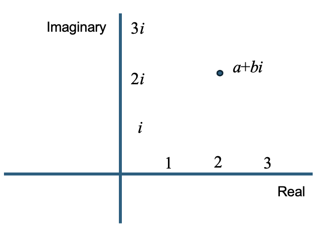
Figure2.2.9.Perpendicular "Number Lines" for Describing \(a+bi\)
One advantage to this representation is that when we consider the real numbers as a subset of \(\mathbb{C}\) by setting \(b=0\text{,}\) from a graphical perspective, the plane is reduced to the real line and thus we have a consistent representation for the real numbers using a measurement model. In addition, from a linear algebra perspective, we can also view complex numbers as vectors and thus the vector space, \(\mathbb{R}^2\text{,}\) can be thought of as isomorphic to \(\mathbb{C}\) and \(\mathbb{R}\) as a subspace of \(\mathbb{C}\text{.}\)
If we can think of the complex numbers as a plane, can we have different representations of these numbers from an algebraic standpoint? As you may recall from high school, we can graph points with real coordinates in either a Cartesian or polar form. Just as we can define a point by two numbers representing a position along the \(x-\) and \(y-\)axes, we can also define the same point by an angle, \(\theta\text{,}\) and a radius, \(r\text{.}\) To illustrate this, consider the unit circle in Figure 2.2.10.
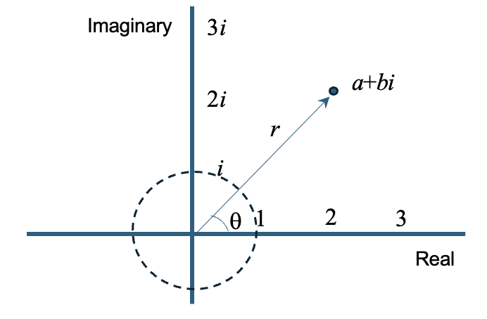
Figure2.2.10.Complex Plane with \(a+bi\) Defined by Angle and Distance
The position of the point in the complex plane along the unit circle can be described by the angle and radius (in this case \(r=1\)). If we wish to see the relationship between the Cartesian and polar representations, we simply use the trigonometric relations to see that \(a=\cos \theta\) and \(b=\sin\theta\) (see Figure 2.2.11).
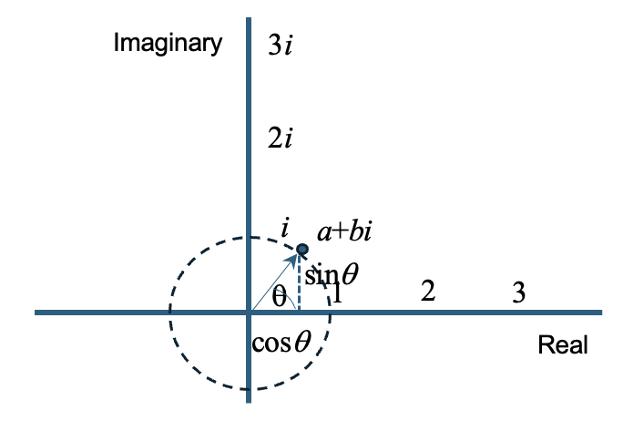
Figure2.2.11.Complex Number on the Unit Circle
If the complex number is not confined to the unit circle, we can represent it by multiplying \(\cos\left(\theta\right)+i\sin\left(\theta\right)\) by the radius, \(r\text{,}\) yielding \(r \left(\cos\left(\theta\right)+i\sin\left(\theta\right)\right)\text{.}\) In this way we can describe any point in the complex plane as in Figure 2.2.10.
When we extend our number system representing them as points in a plane, concepts like absolute value become more interesting. How do we interpret the concept of absolute value for complex numbers? One of the beautiful things about mathematics is its logical consistency. When it comes to absolute value, we should expect nothing less. Recall that our concept of absolute value for real numbers is linked to a relationship of distance on the real number line. For the real numbers, \(\left|x\right|\) is just the distance of \(x\) from 0 on the number line. Why not adopt a similar concept for the absolute value of a complex number. In this case, instead of the position of 0 on a line, we invoke the analogous point for a plane. Therefore we define the absolute value or modulus of a complex number, \(z\text{,}\) as the distance of \(z\) from the origin of the complex plane, denoted by \(\left|z\right|\text{.}\)
If we think of \(z=a+bi\text{,}\) then \(\left|z\right|=\sqrt{a^2+b^2}=\sqrt{\left(\text{Re}\left(z\right)\right)^2+\left(\text{Im}\left(z\right)\right)^2}\) by the Pythagorean theorem where \(\text{Re}\left(z\right)\) and \(\text{Im}\left(z\right)\) represent the real and imaginary parts of the complex number. We often refer to the complex numbers that lie on the unit circle in the complex plane as the set, \(U\text{.}\) Therefore \(U=\left\{z \in \mathbb{C} \mid \left|z\right|=1\right\}\text{.}\) The angle, \(\theta\text{,}\) of the vector for \(z\) is called the principal angle or sometimes the principal argument of \(z\) and expressed as \(\text{Arg}\left(z\right)\text{.}\) We will explore this set of complex numbers later when we look at orbits of complex numbers.
Our next question is how do we compute with complex numbers? Is our definition of these numbers consistent with or geometric view of complex numbers as being represented by points in a plane? For addition, \(\left(a_1+b_1i\right)+\left(a_2+b_2i\right)=\left(a_1+a_2\right)+\left(b_1+b_2\right)i\) due to commutativity and the distributive property. How does this play out geometrically? Consider the addition of two vectors in the complex plane.
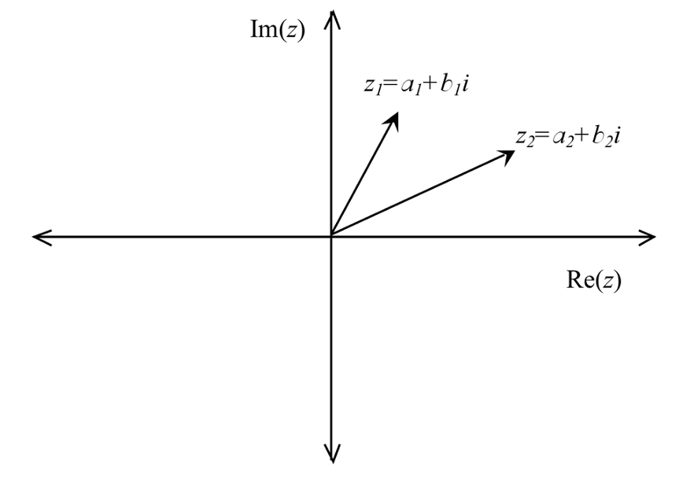
Figure2.2.12.Two Vectors in the Complex Plane
Adding these vectors geometrically, we get
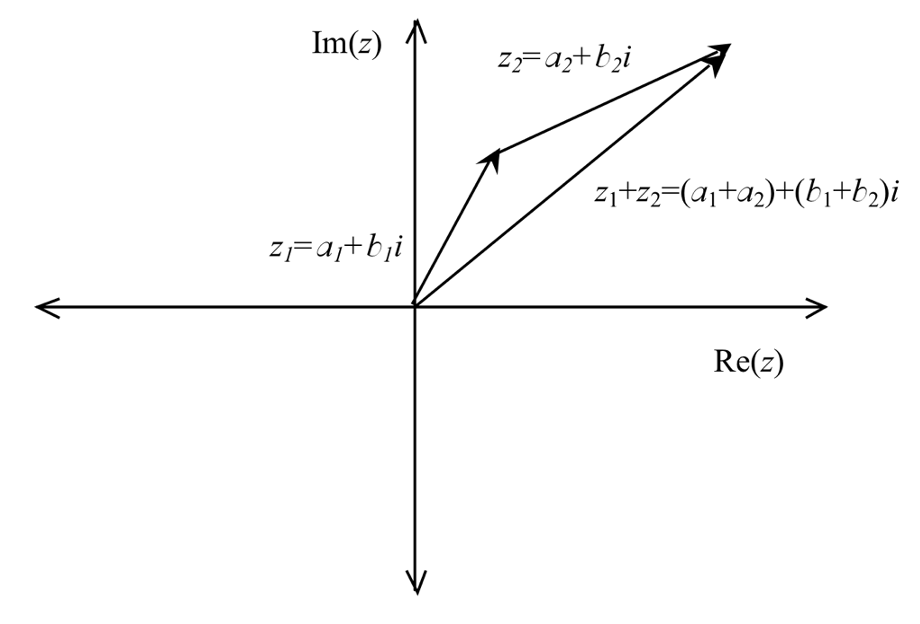
Figure2.2.13.Adding Two Vectors in the Complex Plane
Since we add vectors head-to-toe, the geometric representation is consistent with the algebraic representation through standard vector addition.
Now we can turn our attention to multiplication. Again, using the basic commutative and distributive properties, we would suspect that
What geometric properties can we expect from this consequence and how do they fit with our earlier observations? To explore the geometric interpretation of this product, let us consider the polar forms of these complex numbers where
This tells us that the product in some way involves the product of the two moduli, \(r_1\) and \(r_2\text{.}\) But how are the angles of the original complex numbers and the resulting angle of the product related? Consider the two components of the product, \(\cos\left(\theta_1\right)\cos\left(\theta_2\right)-
\sin\left(\theta_1\right)\sin\left(\theta_2\right)\) and \(\cos\left(\theta_1\right)\sin\left(\theta_2\right)+
\cos\left(\theta_2\right)\sin\left(\theta_1\right)\text{.}\) Do these look familiar? If not, open your old Calculus or Trigonometry text and investigate. From our basic trigonometric identities, we see that
Thus, the modulus of the product of two complex numbers is the product of the moduli for the original two numbers and the argument of the product is the sum of the arguments. In other words,
Or in other words, if \(\theta_3\) is the angle of the product, \(z_3\text{,}\) then \(\theta_3=\theta_1+\theta_2\text{.}\)
Subsection2.2.6Seeing Connections: Taylor Series
As we have seen through the use of trigonometric identities, finding the product of two complex numbers expressed in polar form is simply a matter of multiplying the moduli and adding the arguments and then using the cosine and sine of the new arguments. But is there an easier way to represent complex numbers so that the need to find trigonometric values of the arguments is not necessary? At this point, we will examine what you discovered in the activity, A Complex Situation (Activity 2.2.7), and apply it to work with complex numbers.
You may recall from Calculus that when we wish to model exponential growth mathematicians and scientists often use functions of the form, \(Ae^{kt}\) even though our first experiences with such phenomena usually involve the concept of doubling. For example, as teachers, we often introduce exponential growth through examples like:
A population of ducks doubles every 13 years. If the population of ducks currently numbers 45, how many ducks would you expect in the population in 26 years?
Using this type of example to introduce exponential growth, one might expect to model the growth using a function of the form \(A2^{kt}\) rather than \(Ae^{kt}\text{.}\) It is not until we begin the study of Calculus that we can grasp the reason for using \(Ae^{kt}\text{.}\) Recall that \(\frac{d}{dx}\left(a^x\right)=a^x \ln \left(a\right)\) and so for the special case where \(a=e\text{,}\) this derivative simplifies to \(\frac{d}{dx}\left(e^x\right)=e^x\text{.}\) Therefore it is advantageous to use the natural base, \(e\text{,}\) instead of a base like 2. In a similar manner, we find \(e\) creeping back into the representation of complex numbers as well.
Consider the result you found in Activity 2.2.7, A Complex Situation. In particular, consider the relationship
This suggests that any complex number can be expressed in the form \(re^{i \theta}\text{.}\) We should take a moment to mention that a treatment of the convergence of complex series is necessary here, but for the time being we will assume these series converge. Thus if we consider any two complex numbers \(z_1=r_1e^{i \theta_1}\) and \(z_2=r_2e^{i \theta_2}\text{,}\) then the product is given by
yielding the same conclusion found using trigonometry. In this case, results from Calculus find an interesting way of influencing the representations we might choose to use for complex numbers. If you have ever asked yourself why a high school teacher needs to take so much mathematics beyond what is taught in the high school, this is one example of how understanding the relationships among various areas of mathematics might influence pedagogical choices made in the classroom.
Subsection2.2.7Orbits of Complex Numbers
Just like the real numbers, the complex numbers have a structure that allows for the solution of equations by using basic properties. We will expand on these later when we address the concept of a group within the context of abstract algebra, but for now it suffices to say that just like the real numbers under multiplication, there exists an identity element that when multiplied by any number leaves it alone. For example, consider \(5 \cdot 1=1 \cdot 5=5\text{.}\) Here the number 1 is acting as the identity element. When it comes to solving equations, this is an important idea since if we can get the coefficient of a variable to be 1, we can basically ignore it. Consider the equation, \(5x=15\text{.}\) If we can only find a way to make the coefficient of \(x\) a 1, it for all practical purposes can be ignored the variable is then alone on one side of the equation leaving us able to simply read off the solution. But how can we "make" the coefficient a 1? We can’t just change it. Well, the key is to exploit a relationship between an identity element and an inverse element. Basically, an inverse is an element (or number in this case) that when combined with a number using the operation (multiplication in this case) yields the identity. In the case of our equation, \(5x=15\text{,}\) we need a number that when multiplied by 5 gives 1. The number, \(\frac{1}{5}\text{,}\) works here as \(\frac{1}{5}\) is the multiplicative inverse of \(5\text{.}\)
The use of this relationship between identities and inverses is the key to solving many problems including puzzles like Rubik’s Cube and thus permeates all of mathematics. For our \(5x=15\) example, we simply multiply by \(\frac{1}{5}\) on the left on both sides of the equation and we get
The next natural question is if complex numbers have the same relationships? In the following activity, we will explore these properties with complex numbers by looking at orbits of complex numbers.
Activity2.2.8.Orbits of Complex Numbers.
For this activity you will need the file Orbits.tns for the TI-Nspire CX II CAS. Consider the following set of complex numbers, \(Q=\left\{a,b,c,d,e,f,g,h\right\}\text{,}\) with the operation of multiplication shown below and defined on page 1.1 of the document. Be certain that your Document settings allow appropriate viewing of complex numbers.
Does every element have an inverse? Recall that two elements are inverses if when combined they give the identity as a result (in this case for multiplication, 1). Make a list of all elements and their inverses provided they have one.
(b)
For each element in the set \(Q\text{,}\) find the first power you must use to give a result of 1. Here you may want to use the algebraic capabilities of the spreadsheet to quickly check. For example, below we see the use of the Lists and Spreadsheet page to quickly produce the powers of the element, \(b\text{.}\) Here the first time \(b\) to a power gives the result of 1 is for the exponent 4.
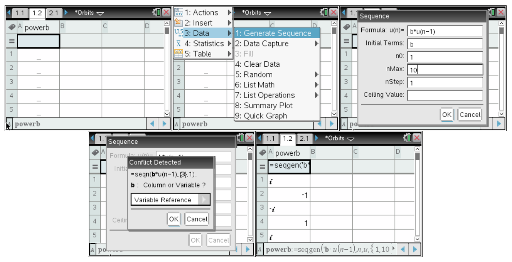
Figure2.2.14.Using a Spreadsheet to Generate Powers
(c)
Now using the element, \(a\text{,}\) what elements of \(Q\) can you express as a power of \(a\text{?}\) List each of these elements and their corresponding power of \(a\text{.}\)
(d)
Using your observations from part (c), explain the relationship that exists between the powers of \(a\) for each element of \(Q\) and the corresponding power of \(a\) for each element’s inverse.
Consider the elements of the set \(Q\) defined above. Recall that using Taylor series we derived Euler’s equation, \(e^{i \theta}=\cos \theta +i \sin \theta\text{,}\) and saw that from a geometric standpoint all complex numbers of the form \(a+bi\) can be expressed in polar form as \(re^{i \theta}\) where \(r\) is the length of the vector representation of the complex number and \(\theta\) is the angle of the vector with respect to the positive x-axis.
(e)
For the element \(a \in Q\text{,}\) find the corresponding values of \(r\) and \(\theta\) and represent \(a\) in the \(re^{i \theta}\) form where \(0 \leq \theta \leq 2\pi\text{.}\)
(f)
Discuss the relationship between the product of any two complex numbers and the original two complex numbers themselves. In particular, what relationships exist between the length and angle of the product when compared to the lengths and angles of the two original complex numbers?
Hint.
Note what happens when you multiply \(r_1e^{i \theta _1}\) and \(r_2e^{i \theta _2}\text{.}\)
(g)
Using the polar representation for \(a\) that you found in part (e), give the polar form for all elements in \(Q\) by using the relationships you discussed in part (f) and sketch each of these elements as vectors on the complex plane below (be sure to label each).
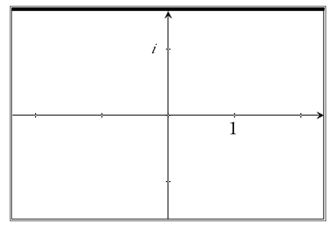
(h)
How many solutions are there to the equation \(x^8=1\) and how do the elements in \(Q\) relate to this?
In the earlier questions we were dealing with complex numbers whose vector had length 1 and all were on the unit circle in the complex plane. But what would happen if the length of the vector representing a complex number was something other than 1? To explore this, start with the Calculator page 2.1 of the document and store the complex number \(a\) from the earlier questions above in the variable, \(z\text{.}\) On page 2.2, the powers of any complex number stored as \(z\) on the Calculator page are graphed in the complex plane. Here you should see the “orbit” of the 8th roots as you sketched them in question (g). See Figure 2.2.15.
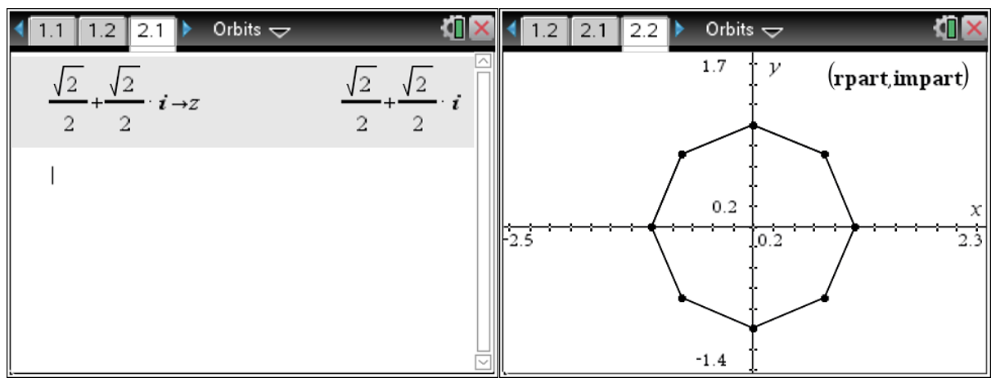
Figure2.2.15.Orbit of a Stored Complex Number
(i)
Explain why these resulting complex numbers all fall on the unit circle.
(j)
Now choose another complex number with length (modulus) less than 1 and store it in \(z\text{.}\) An easy way to enter such a number is to use the polar form \(r\left(\cos \theta +i \sin \theta\right)\) where \(0 \leq r \leq 1\text{.}\) Sketch the resulting orbit of your complex number. Explain the behavior you see by relating it to what you know about products of complex numbers.
(k)
Now choose another complex number with length (modulus) greater than 1 and store it in \(z\text{.}\) An easy way to enter such a number is to use the polar form \(r\left(\cos \theta +i \sin \theta\right)\) where \(0 \leq r \leq 1\text{.}\) Sketch the resulting orbit of your complex number. Explain the behavior you see by relating it to what you know about products of complex numbers.
(l)
Explain when the orbit of a complex number will spiral outward and when it will spiral inward.
As a special case of the multiplication of complex numbers, consider the powers of a complex number. Based on the results we have seen in Activity 2.2.8 thus far, we can state the following.
Theorem2.2.16.
Let \(z=r\left(\cos \theta +i\sin \theta \right)\) be any complex number and let \(n \in \mathbb{Z}^{+}\text{.}\) Then \(z^n=r^n\left(\cos \left(n\theta \right) +i\sin \left(n\theta \right) \right)=r^ne^{in \theta}\text{.}\)
What does this theorem say about the sequence \(\left \{z,z^2,z^3,\ldots \right \}\) in the complex plane? To begin, let us look at an example such as \(z=\sqrt{2}\left(\cos \left(\frac{\pi}{3} \right) +i\sin \left(\frac{\pi}{3} \right) \right)=
\sqrt{2}e^{i \frac{\pi}{3}}\text{.}\) Graphing the successive powers of \(z\) in the complex plane we get the following spiral.
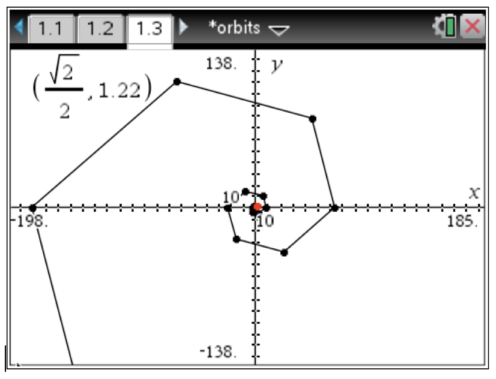
Figure2.2.17.Orbit of \(z=\sqrt{2}\left(\cos \left(\frac{\pi}{3} \right) +i\sin \left(\frac{\pi}{3} \right) \right)\)
Now consider the complex number, \(z=\frac{1}{2}\left(\cos \left(\frac{\pi}{3} \right) +i\sin \left(\frac{\pi}{3} \right) \right)=
\frac{1}{2}e^{i \frac{\pi}{3}}\text{.}\) Here the successive powers yield a different kind of spiral.
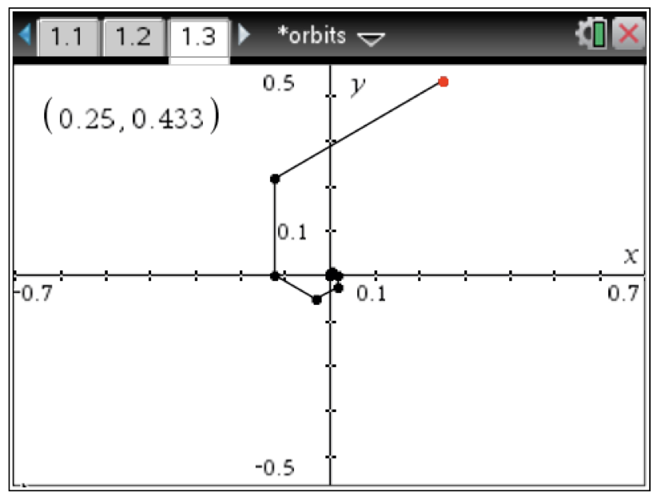
Figure2.2.18.Orbit of \(z=\frac{1}{2}\left(\cos \left(\frac{\pi}{3} \right) +i\sin \left(\frac{\pi}{3} \right) \right)\)
Why does one of these produce an outwardly spiraling pattern while the other produces an inward spiral? Consider the consequences of Theorem 2.2.16. As we go from one power to the next, the point in the complex plane rotates by the initial angle (in this case, \(\theta =\frac{\pi}{3}\)). In addition, the modulus becomes successive powers of the original modulus. In the case of \(r=\sqrt{2}\) which is greater than 1, the sequence of the successive modulus will increase without bound. In the case of \(r=\frac{1}{2}\) which is less than 1, the sequence of successive modulus decreases and converges to 0. What would happen if the original complex number appeared on the unit circle? You explored this question in Activity 2.2.8. Because of this spiraling pattern, this sequence of powers of a complex number is called the orbit of the complex number.
Definition2.2.19.
Let \(z \in \mathbb{C}\text{.}\) The set \(\mathbf{Orb}\left(z\right)=\left \{z^n \mid z \in \mathbb{Z}^+ \right \}\) is called the \(\mathbf{orbit}\) of \(z\text{.}\)
One of the applications of orbits of complex numbers is in determining roots. For example, suppose we want to find all of the 7th roots for the complex number, \(z=-2+2i\text{.}\) We can also express this as \(z=\sqrt{8}\left(\cos \left(\frac{3\pi}{4} \right) +i\sin \left(\frac{3\pi}{4} \right) \right)\) since \(r=\sqrt{\left(-2\right)^2+2^2}=\sqrt{8}\text{.}\) If we consider a 7th root of \(z\text{,}\) call it \(z_r\text{,}\) to have the property that \(\left(z_r\right)^7=\sqrt{8}\left(\cos \left(\frac{3\pi}{4} \right) +i\sin \left(\frac{3\pi}{4} \right) \right)\text{,}\) then we know that its modulus must end up being \(\sqrt{8}\text{.}\) By Theorem 2.2.16, this means that the modulus of \(z_r\) must be \(\left(\sqrt{8}\right)^{\frac{1}{7}}\) and \(z_r\) must have rotated six times to arrive at the \(\mathbf{Arg}\left(z\right)\text{.}\) In other words, we need
\begin{equation*}
7 \theta_r=\frac{3\pi}{4} \text{ and thus } \theta_r=\frac{3\pi}{28}
\end{equation*}
However, this is not the only equation that will do what we wish. Since we are dealing with periodic functions, we could equally solve the equation
The geometric relationship here can be seen by examining the orbits for these solutions. Consider the following orbits for \(k=\left \{0,1,2,3\right \}\) shown below. These graphs utilize a polar graphing mode defining \(z\left(k\right)=8^{\frac{1}{14}}\left(\cos \left(\frac{3\pi}{28}+\frac{2 \pi k}{7} \right)
+i\sin \left(\frac{3\pi}{28}+\frac{2 \pi k}{7} \right) \right)\) and graphing the x-coordinate as \(real\left(z\left(k\right)^t\right)\) and y-coordinate as \(imag \left(z\left(k\right)^t\right)\) for \(k=\left \{0,1,2,3\right \}\) and \(t=\left \{0,1,2,\ldots, 7\right \}\text{.}\) They also use a connected line to show the progression from one power to the next. The geometric representation for each value of \(k\) shows the rotation about the origin by the same angle for successive powers and an elongation of the modulus finally ending at the complex number, \(-2+2i\) when raised to the 7th power. Since the angle that is being used for the rotation is of the form \(\theta_r=\frac{3\pi}{28}+\frac{2 \pi k}{7}\text{,}\) you will notice that as \(k\) increases, the size of the angle rotation between successive powers also increases.
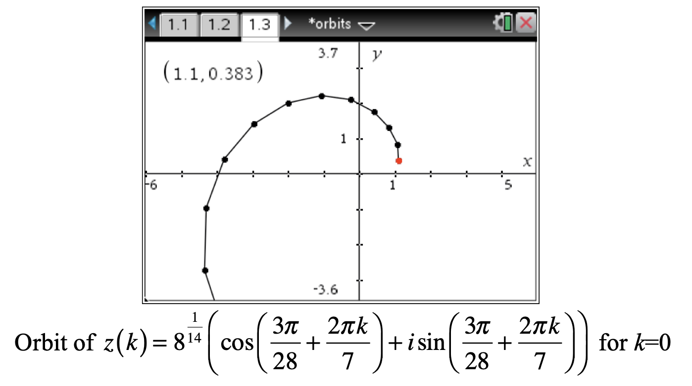
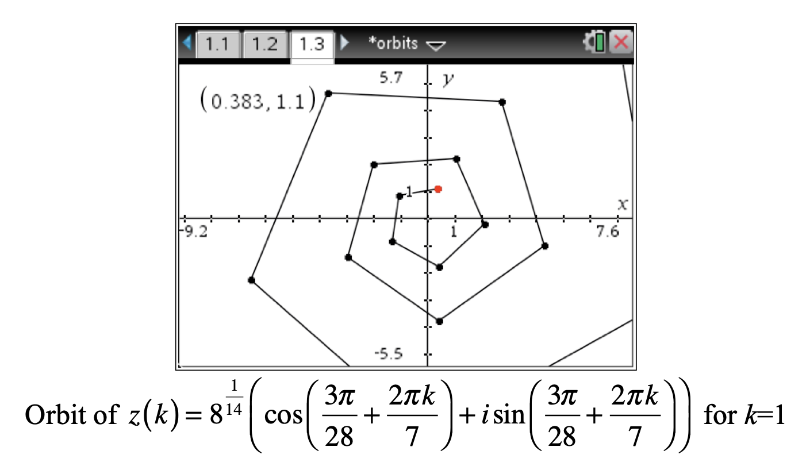
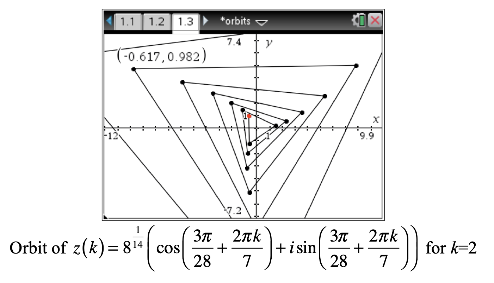
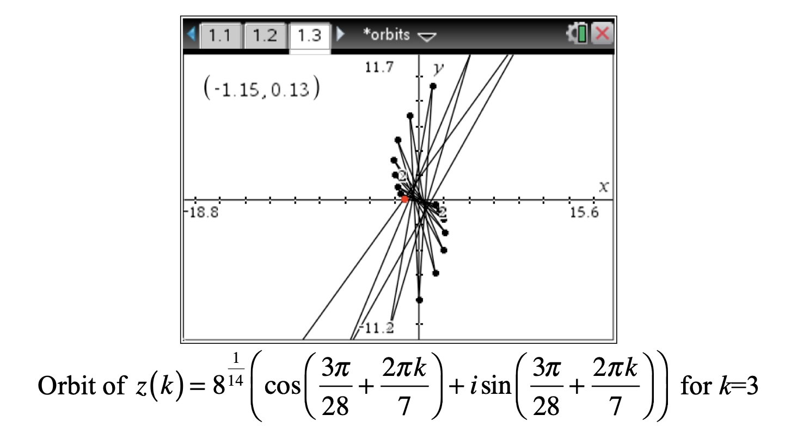
By examining the geometric representation, we now have a visual perspective for how Theorem 2.2.16 works in the determination of \(n^{\text{th}}\) roots.
Exercises2.2.8Exercises
1.
Show that if a quadratic with real coefficients has a complex root with an imaginary part, then it must have two complex roots with imaginary parts.
2.
Suppose \(z_1, z_2 \in U\text{,}\) the unit circle in the complex plane. Show that the product, \(z_1 \cdot z_2 \in U\text{.}\)
3.
Suppose, \(z_1 \in U\) and \(z_2 \notin U\text{,}\) what can you say about the modulus, \(\left| z_1 \cdot z_2 \right|\text{?}\) Explain why the term, “units”, is used to describe the set \(U\text{.}\)
Let \(x \in \mathbb{R}\text{.}\) Using Theorem 2.2.16, explain the behavior of the familiar sequence \(\left \{x^n \right \}\) for \(n \in \mathbb{N}\text{.}\) In other words, explain why we get the alternating signs when \(x < 0\) and only positive numbers when \(x > 0\text{.}\)
6.
Given a complex number, \(z\text{,}\) explain how you would find its additive inverse. You should use both algebraic and geometric representations to justify your strategy.
7.
Given a complex number, \(z\text{,}\) explain how you would find its multiplicative inverse. You should use both algebraic and geometric representations to justify your strategy.
8.
Using the polar graphing capabilities of your CAS, graph the orbit of \(z=1.2\left(\cos \left(\frac{\pi}{6} \right) +i\sin \left(\frac{\pi}{6} \right) \right)\) showing at least 10 points in the orbit.
9.
Explain why there can be no more than \(n\) distinct, \(n^\text{th}\) roots for complex numbers.